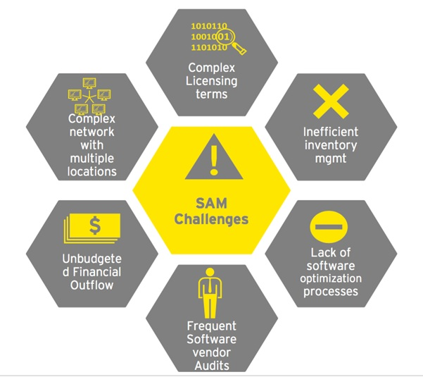
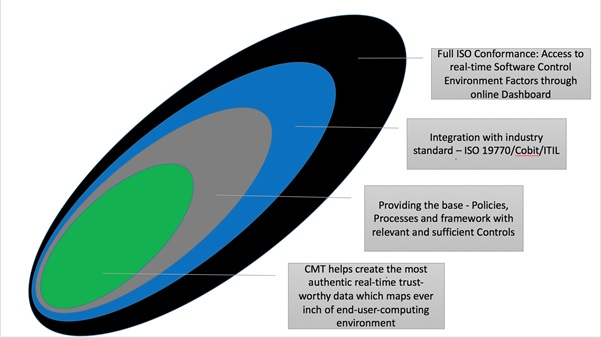
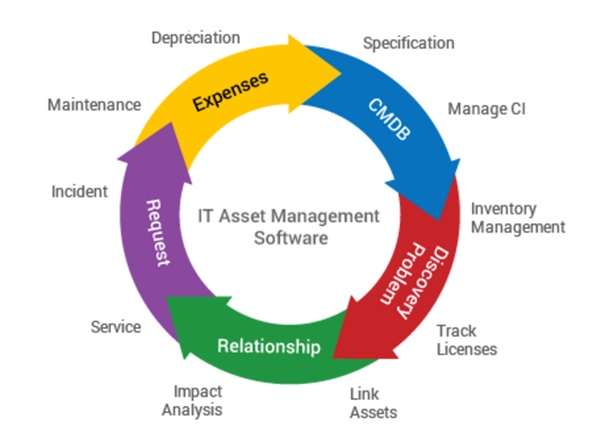

| IT Governance Services | ||
|---|---|---|
Identification & Documentation |
Understanding the AS-IS situation and putting all Records of Procurement, Deployment and Management together |
|
Evaluation |
Understanding and bench-marking the Records to established and accepted Standards |
|
Compliance Testing |
Putting Licensing to Test through Tools and Reconciliation |
|
Substantive Testing |
Identifying the Risks that can potentially impact the established controls |
|
Disaster-Recovery Testing |
Identifying the opportunity to recover after an understood disaster |
|
| IT Governance Managed Services | ||
|---|---|---|
IT General Process Review |
Business Requirements and Associated Risks |
|
Organisation Structure |
||
Roles and Responsibility |
||
Policies and Procedures |
||
Law and Regulations |
||
Control Measures |
||
Management Reporting |
||
Evaluating Controls |
Documentation Process |
|
Delivery Process |
||
Responsibility & Accountability |
||
Risk Appetite and Disaster Recovery |
||
Assessing Compliance |
Tool Audit & Evidence Mapping |
|
Physical Audit & Evidence Mapping |
||
Review of Workflows on IT Lifecycle Management |
||
Improvement Areas/SWOT |
||
Guidelines and Analytics |
Document all Control Weaknesses, Risks, Threats and Vulnerabilities |
|
Grass-Root Analysis |
||
Comparatives (If required) |
||
~ Evaluating Controls: Based on Industry Standards, Critical Success Factor, Risk Profiling and Business Continuity Plan
Client Management Tooling Services |
Infra Review |
|---|---|
Deployment and Application Management |
|
Device Policy Framework |
|
Identity Management |
|
Compliance |
|
End-User Support |
Its not about just managing laptops, desktops and few servers alone. It is far more than what we can even anticipate - access services, applications, data, security, etc and, if that looked just enough, location or what we call footprint - makes it just too tight. However, our customers are running an organization which means - the discussion now extends further to productivity, flexibility and how could we forget the CFO whose buss word is "Cost Saving".
Usage of multiple computing devises just increases the complexity further. Licensing requirements are also equally dynamic and sometimes complex - from perpetual to now the world of cloud - Software as a Service. This is where we help with transitions and sharing your load.
While in most cases the old work horse - our desktop has not changed, but our new users now want to stay connected, have access to best networks and services on press of a button. Our users have option of devises and most choose one according to their business requirement. They access applications from corporate to personal to banking. If that you thought was not enough - our users today wish to make a lot many independent IT decisions. Often inviting security threats that may not be a remote possibility.
We bring to the table our experience and skills - to help you find or take informed decisions - that makes your end-user-computing environment robust by each passing day. We evaluate the following:
So, what's are value preposition:
Its all about accountability and understanding the customer's structure and processes. Hence, globally, we believe to offer the right internationally acclaimed standards and framework for end-user-computing management services.
End-user-computing management is role-based on Software Asset Management having its roots in the following standards:
A wide framework which deals with IT management and IT governance.
COBIT approaches SAM in several different ways but mostly focuses on governance, compliance, cost management, budgeting, security and configuration management.
An approach for IT Service Management that provides a practical framework for identifying, planning, delivering and supporting IT services to the business. Based on best practices and which provide a systematic approach to the management of IT services, enabling organizations to deliver appropriate services.
A framework of SAM processes covering 27 separate process areas which enable an organization to prove that it is performing software asset management to a standard sufficient to satisfy corporate governance requirements and ensure effective support for IT service management overall.
We bring to our customers the right choice of processes backed by Client Management Tooling Services that helps customer gain visibility and, hence, plan the way forward which is cost effective and provides a roadmap.
Client Management Tools (CMT) is the preferred approach in both midsize and large enterprises. Though they need to be configured strictly in-line with the established and adopted policies. Primarily CMT are used by many organizations to reduce cost of ownership, improve user productivity, increase IT efficiency and enable a secure end-user-computing environment.
CMT is a fairly mature market. However, ongoing changes in end-user-computing are forcing service providers to continually innovate and evolve to address new requirements. In particular, bring your own device (BYOD), mobility, licensing fragmentation, contract management and the cloud are requiring organizations to rethink the way they manage end-user-computing environments.
CMT continues to evolve most dynamically and, hence, we keep you ahead of time. While the core requirements of inventory, software distribution, OS deployment and patch management remain constant, the differentiator is the simplified self-service capabilities. With CMT as a service - our customers see self-service as a way to enhance the management experience for the user, improve the efficiency in which software is distributed and potentially help save money on software licenses. However, for the customer, it is very important to choose the right tooling service and ensure seamless deployment.
CMT could be on-premise or as SaaS, though Gartner, too believes that the future state of client management will be a hybrid of on-premises and SaaS functionality. Since, multiple computing devises most of which would be mobile is the growing trend, hence we now are forced to focus on user management and not just device management. This brings in People (the User) into the charter of CMT. We give the flexibility to customers to choose the right CMT as service based on their experience from a real-time Proof of Concept.
  